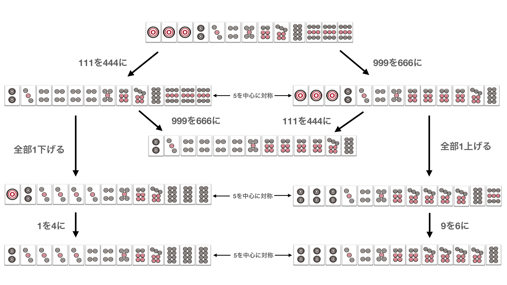

8門待ち、9門待ちの考察
8門待ちの基本形
8門待ちの基本形は以下の10枚形です。
なお、以下の形は7門待ちですが、実質同じ形の8門待ちの構造として解釈できます。行き止まりで待ちが消える特殊な場合です。0や10を考慮すれば、同じ形の8門待ちと言えます。麻雀は1から9までですが、なぜ0や10を考慮しているのかは純正九蓮宝燈との関連の節で述べています。
この10枚形に、両端の刻子を跨がない順子、または持っていない数字の刻子を追加した場合、待ちに変化はありません。※持っている数字の刻子を追加すると、4枚使いになり待ちが1つ少なくなります。その場合、牌姿は7門待ちに分類されますが基本形は共通の8門待ちとして解釈しました。
例
上記はいずれも の8門待ちになります。両端の刻子を跨がない順子、または持っていない数字の刻子を追加した場合は元の10枚形の待ちに変化を与えません。
一方で、両端の刻子を跨ぐ、または外側に伸びる順子を追加した場合、下記のような10枚形(6門待ち)と複合となり13枚形に変化します。
例
この形は
に分解できます。以下の形も
に分解できます。2つの10枚形の待ちを複合すると の9門待ちです。ただし4枚使いが必ず出るため全体としては8門待ちとなります。この2つを複合した13枚形は純正九蓮宝燈からの変化形でもあります。
純正九蓮宝燈との関連
この2つの13枚形は同じ系統の構造だと解釈できます。
なぜかというと、純正九蓮宝燈の形から
9を6に
ひとつ右にスライドさせます(それぞれの数字に1を足す)
同じ形に辿り着きました。
もうひとつ例
9を6に
8を5に
ひとつ右にスライドさせます(それぞれの数字に1を足す)
このように純正九蓮宝燈から変化させていくことで同じ形に辿り着きます。
なぜ純正九蓮宝燈からの変化が成り立つのかは0と10を考えると推測できます。麻雀は1から9までしかないため012や8910といったメンツは存在しないし通常考えることもないです。
しかし0と10を考えるなら純正九蓮宝燈は
012345678910待ちの11連宝燈とみなせます。0と10でもあがれることが確認できます。
この形から1を4に、または9を6に変えます。
これらはそれぞれ1から10待ちの10門待ち、0から9待ちの10門待ちとみなすことができます。
そこからひとつスライドさせた形が8門待ちで出てきた13枚形です。もともと10門待ちなので、ひとつスライドさせても0か10がなくなるだけで9門待ちになり、カンコ使いがでるため8門待ちになっているだけです。0と10を考えると、純正九蓮宝燈からの変化でアガリ牌の枚数が最大の23枚待ちの形(7門待ち、8門待ちの一部)にすべて辿り着きます。(※7門待ちに例外の形があるので後述)
また、8門待ちの基本形であげた10枚形も、純正九蓮宝燈から変化させた形から1メンツを抜いて、待ちが1つ減った形です。
から を抜く。
よって8門待ち、9門待ち(純正九蓮宝燈)は形として同系統とみなすことができると考えられます。
※ 、 は、待ちが1つ少ないですが0や10を考えたら同じ8門待ちだと解釈できます。横にスライドさせただけの形には違いないため、これらは同じ待ちの形として扱います。形に対してより抽象的に認識し覚えやすくするため、0と10を考慮しています。
なお、似たような形で
があります。
の7門待ちの形で、純正九蓮宝燈の9門待ちと同じく、待ちの枚数が最も多い23枚という優秀な形です。しかしこの形は純正九蓮宝燈からの変化では辿り着けず、また37をカンコ使いしているが37は待ちになっていない特殊な13枚形です。9門待ちだけど37をそれぞれ4枚使っているから7門待ちということではありません。